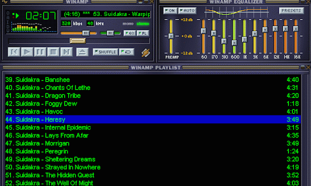

Les oubliés des internet
Ce site est dédié aux oubliés, aux délaissés, aux désertés et aux abandonnés des internet. Ces Skyblogs qui ont nous ont bercé et fait voyager depuis notre plus tendre enfance avant de passer au fade Facebook, ou pire : TWITTER !!! Ces profils MySpace dont la dernière visite remonte à une date commençant par le tiret du 6 et finissant par "av. JC". Ces albums de Lorie ou Cascada téléchargés sur Emule et que l'on a oubliés dans un dossier perdu. Que leur mémoire ne soit pas perdue ! Que le souvenir chaleureux de leur présence passée demeure en chacun de nous pour toute l'éternité, ils le méritent...
Megavideo
MegaVideo était (rip) un site Web de partage de vidéo, basé à Hong Kong et mis en place par les créateurs de MegaUpload (rip aussi). En novembre 2008, il était dans les 100 sites web les plus visités du monde et se rapprochait en termes d'audience de Dailymotion (!!!). Accusé d'avoir violé les lois anti-piratage, le site est fermé le 19 janvier 2012 (rip) par le département de la Justice des États-Unis.
MSN
MSN Messenger was, and will forever be, the best instant messaging app to ever have existed. Hell, it existed before people called things “apps”, it was just a “thing” that you used to speak to other people, and it was glorious.Désolé pour les non anglophones, mais faites un effort c'est pas dur.

Winamp
Winamp, dans le temps c'était le feu et tout le monde le savait, et maintenant c'est toujours le feu mais personne est au courant. Ici on parle d'un temps que les moins de 20 ans ne peuvent pas connaître. Et plus précisément d'un logiciel oublié qui permettait de lire toute sorte de fichiers audio avec un son de très grande qualité. On pouvait faire plein de trucs chouettos avec ce bordel là, mais il a fini par s'effacer de la mémoire du grand public, pour on ne sait quelle raison.

Rotten
Rotten, on va pas se le cacher, il faut aimer souffrir pour le visiter. Il regroupe toutes les images les plus trash du net, et quand vous lisez trash, comprenez que vous n'avez absolument PAS ENVIE d'aller voir à quel point ce site l'est (franchement, il est même pire). Il n'empêche que l'ancêtre de 4chan était sacrément connu à l'époque et qu'il est complétement passé aux oubliettes aujourd'hui.